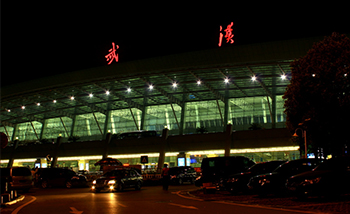

武汉天河国际机场→长江职业学院

南校区
地铁：
机场巴士3线→轨道交通二号线→572路→长职南校区
起点：武汉天河国际机场
步行37米至机场国际航站楼
从机场国际航站楼乘机场巴士3号线至汉口新华路（4站）下车 末班车 20:00
步行395米至地铁二号线循礼门站（A口）
从循礼门站上车（A口进）至光谷广场站（12站）下车（C口出） 末班车 22:30
南行600米即到。
公交：
机场巴士1号线→715路→长职南校区
起点：武汉天河国际机场
步行141米至天河机场2号航站楼
乘坐机场巴士1号线至傅家坡（2站）下车 末班车 24:00
换乘715路公交，至雄楚大道民族大道口（13站）下车 末班车 22:00
下车即到。
东校区
地铁：
机场巴士3号线→轨道交通二号线→788路→长职东校区
起点：武汉天河国际机场
步行37米至机场国际航站楼
从机场国际航站楼乘机场巴士3号线至汉口新华路（4站）下车 末班车 20:00
步行395米至地铁二号线循礼门站（A口）
从循礼门站上车（A口进）至光谷广场站（12站）下车（C口出） 末班车 22:30
步行430米至民族大道光谷广场公交站
换乘788路公交，至光谷一路流芳园路（12站）下车 末班车 21：30
步行809米即到。
公交：
机场巴士1号线→715路/510路→788路→长职东校区
起点：武汉天河国际机场
步行141米至天河机场2号航站楼
乘坐机场巴士1号线至傅家坡（2站）下车 末班车 24:00
换乘715路/510路公交，至关山大道太阳城（15站）下车 末班车 21：00
换乘788路公交，至关谷一路流芳园路（7站）下车 末班车 21：30
步行809米即到。
西校区
地铁:
机场巴士4号线→轨道交通二号线→轨道交通四号线→901路→长职西校区
起点：武汉天河国际机场
步行141米至天河机场2号航站楼
乘坐机场巴士4号线至金家墩长途汽车站（2站）下车 末班车 24：00
步行603米至地铁二号线汉口火车站
从汉口火车站（出入口进）上车至中南路站（11站）下车（A口出）末班车 22:30
步行216米至中山路武昌火车站公交站
换乘777路公交，至南湖大道张吴湾（16站）下车 末班车 21:00
步行1.1公里即到。
公交：
机场巴士1号线→797路→817路/320路→长职西校区
起点：武汉天河国际机场
步行141米至天河机场2号航站楼
乘坐机场巴士1号线至傅家坡（2站）下车 末班车 24:00
步行226米至武珞路十五中
换乘797路公交，至文馨街书城路口（11站）下车 末班车 21:35
换乘817路/320路公交，至书城文祥路（2站）下车 末班车 21:50
步行1.2公里即到。